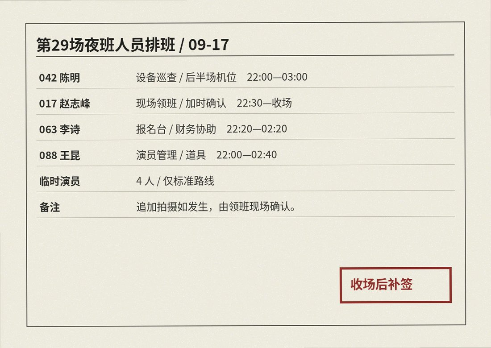

夜场系统 > 第29场 > 素材 / 排班
当班人员

| 042 陈明 | 设备巡查 / 后半场机位 | 22:00—03:00 |
|---|---|---|
| 017 赵志峰 | 现场领班 / 加时确认 | 22:30—收场 |
| 063 李诗 | 报名台 / 财务协助 | 22:20—02:20 |
| 088 王昆 | 演员管理 / 道具 | 22:00—02:40 |
| 临时4人 | 演员 | 仅标准路线 |
门控主机 / NTP
| 02:18:36 | B12 服务门读卡：后勤推车通过。 | NTP SYNC / OK |
|---|---|---|
| 基准规则 | 门控主机每日00:00自动对时；摄像头画面时间不得直接作为事故基准。 | |
机位巡查表 / 区域对照
| B-10 | B15 外侧 / 02:29 | 内部 |
|---|---|---|
| B-03 | B17 门口 / 02:41 | 事故保留 |
| B-12 | S1 服务门 / 02:12 | 内部 |
| B-04 | EXIT 外侧 / 02:04 | 内部 |
| B-07 | B17 外 / 02:36 | 内部 |
| B-09 | 前台回廊 / 02:07 | 内部 |
器材箱纸条：“09 快半分钟，04 又慢；那台推车三路都拍到了，先拿它对时。后半段别看原时间瞎接。”
B17 风险提醒
| 09/12 | 演员反映门回弹慢，设备组现场重启。 |
|---|---|
| 09/16 | 陈明测试时电控插销连续复位失败；转服务侧人工释放后恢复。 |
| 09/17 21:06 | 赵志峰确认继续使用：“加时只排一个人，不会频繁开关。” |